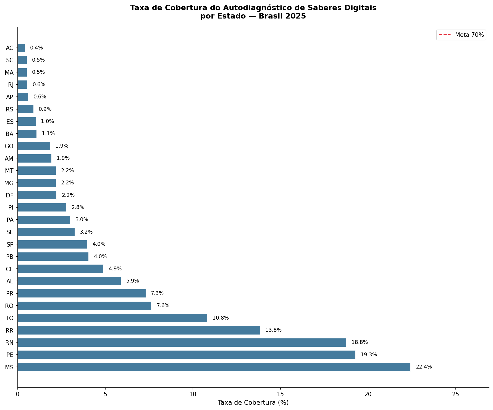
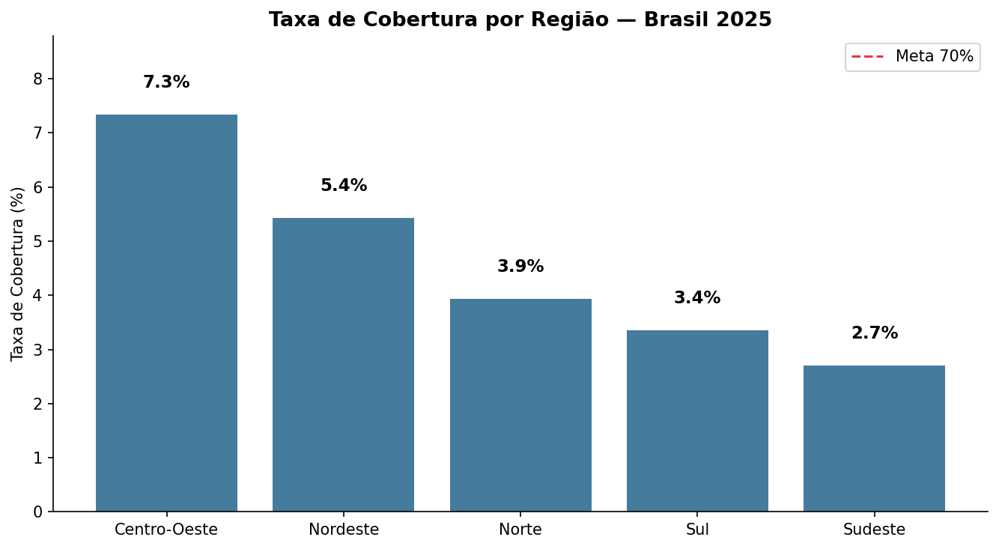
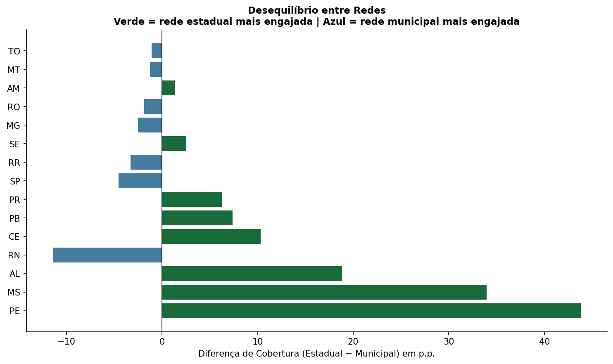

Engajamento Docente no Autodiagnóstico de Saberes Digitais — Brasil 2025
Contexto
A Política Nacional de Educação Digital (Lei nº 14.533/2023) estabelece como estratégia prioritária a promoção de ferramentas de autodiagnóstico de competências digitais para profissionais da educação. Em resposta, o Ministério da Educação disponibilizou o Autodiagnóstico de Saberes Digitais Docentes na plataforma AVAMEC — um questionário de 17 perguntas distribuídas em três dimensões: Ensino e Aprendizagem, Cidadania Digital e Desenvolvimento Profissional.
O MEC só libera o relatório detalhado (com dados individuais por professor) quando 70% dos docentes de uma rede respondem ao questionário. Essa condição torna o monitoramento do engajamento uma questão estratégica para secretarias de educação e parceiros técnicos.
Problema
Nenhum painel público consolida a taxa de cobertura real por estado — ou seja, quantos professores já responderam em relação ao total de docentes da rede. As secretarias só conseguem ver o número bruto de respostas, sem o denominador.
Metodologia
Os dados foram coletados diretamente da API pública do AVAMEC via webscraping — a mesma API que alimenta o painel oficial. Os endpoints foram identificados por inspeção das requisições HTTP no DevTools do navegador (engenharia reversa de API web), técnica que permite automatizar o que o painel faz manualmente.
Os IDs dos estados foram validados consultando o endpoint /estado/lista da própria API, garantindo que cada estado fosse consultado com o identificador correto.
Para calcular a taxa de cobertura real, os dados do AVAMEC foram cruzados com o Censo Escolar 2025 (INEP), combinando a Tabela_Escola_2025 (localização e dependência administrativa) com a Tabela_Docente_2025 (quantidade de docentes por escola) pelo código de entidade (CO_ENTIDADE).
Nota metodológica: O denominador utilizado é a soma de QT_DOC_BAS por escola — mesma metodologia adotada pelo INEP em seus relatórios públicos. Esse indicador contabiliza vínculos docentes, não professores únicos, podendo superestimar levemente o total. A taxa de cobertura real é, portanto, uma estimativa conservadora.
Fontes:
- API pública AVAMEC:
avamec.mec.gov.br/ava-mec-ws/sistema - Censo Escolar 2025: dados.gov.br/inep
Resultados
Nenhum estado atingiu a meta de 70%
A taxa de cobertura nacional é de aproximadamente 4% — o Brasil coletou cerca de 94 mil respostas de um universo estimado de 2,3 milhões de vínculos docentes na educação básica pública.

MS lidera com 22,4% — resultado expressivo considerando o contexto nacional, mas ainda distante dos 70% necessários para liberar o relatório detalhado. PE (19,3%) e RN (18,8%) surpreendem positivamente para o Nordeste.
O Sudeste é a região com menor cobertura (2,7%), resultado paradoxal dado o tamanho e os recursos das redes de SP, RJ e MG. Isso sugere que o engajamento depende mais de mobilização ativa das secretarias do que de capacidade institucional.

Mapa interativo de cobertura
Engajamento vem da rede estadual — com exceções

Na maioria dos estados onde o engajamento é mais alto, ele é liderado pela secretaria estadual — PE (+45 p.p.) e MS (+35 p.p.) são os exemplos mais expressivos. Isso indica que a mobilização top-down da secretaria estadual é o principal vetor de adesão.
RN é a exceção mais interessante: é o único estado com a rede municipal significativamente mais engajada que a estadual (-12 p.p.), sugerindo uma dinâmica de mobilização vinda dos municípios, não do estado.
Composição de respostas por rede
Cobertura estadual × municipal
Concentração geográfica
Em estados como DF (100%) e GO (79%), quase todas as respostas vêm dos 10% de municípios mais ativos. MS é o estado mais distribuído (43%), com engajamento espalhado pelos seus 79 municípios.
Conclusões
O Brasil está muito longe da meta: com 4% de cobertura nacional, nenhum estado está próximo de liberar o relatório detalhado do MEC.
Mobilização institucional importa mais que capacidade: o Sudeste, região mais rica, tem a menor cobertura. MS e PE, com mobilização ativa das secretarias estaduais, lideram.
A rede municipal é invisível na maioria dos estados: a participação municipal é baixa em quase todos os estados, exceto RN e SP — lacuna importante dado que a rede municipal responde por grande parte dos docentes brasileiros.
Monitoramento contínuo é viável: a API pública do AVAMEC permite coleta automatizada e periódica. Com snapshots mensais, é possível acompanhar a velocidade de engajamento e projetar quando cada estado atingirá a meta.
Código
Os notebooks estão disponíveis no GitHub:
01_coleta.ipynb— coleta nacional via API AVAMEC02_mapa_engajamento.ipynb— taxa de cobertura por estado e região03_desigualdade_redes.ipynb— comparação entre redes estadual e municipal